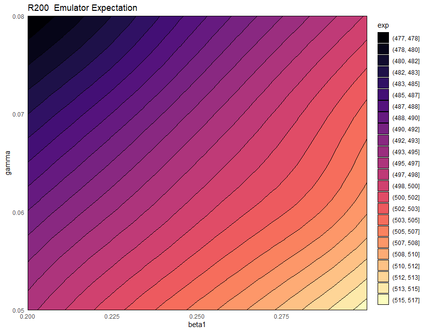
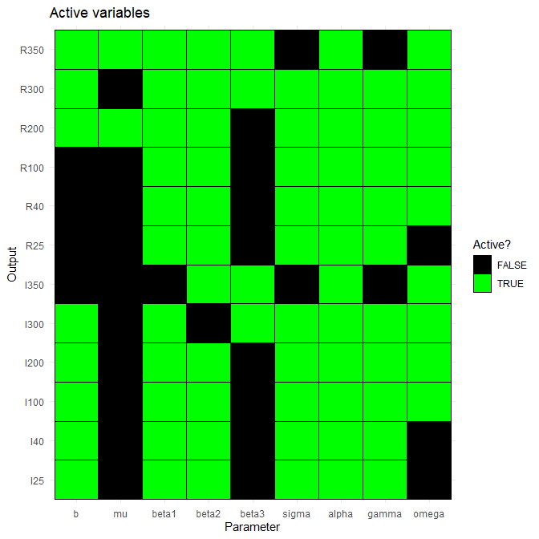
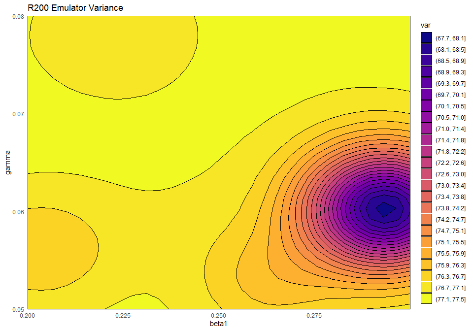

4 Emulators
This section will start with a short recap on the structure of an emulator. We will then train the first wave of emulators and explore them through various visualisations.
Let us start by splitting wave0 in two parts: the training set, on which we will train the emulators, and a validation set, which will be used to do diagnostics of the emulators.
t_sample <- sample(1:nrow(wave0), 90)
training <- wave0[t_sample,]
validation <- wave0[-t_sample,]4.1 A brief recap on emulators
Before building emulators, let us quickly remind ourselves what an emulator is and how it is structured. Note that a more detailed discussion about the structure of an emulator can be found in Tutorial 2 (Section 3, and Appendix A and B), in Bower, Goldstein, and Vernon (2010) and in Vernon et al. (2018).
An emulator is a way of representing our beliefs about the behaviour of a function whose output is unknown. In this workshop what is unknown is the behaviour of our SEIRS model at unevaluated input locations. Given a training dataset, i.e. a set of model runs, we can train an emulator and use it to get the expectation and variance for a model output at any parameter set, without the need to run the model at the chosen set. We think of the expectation as the prediction provided by the emulator at the chosen parameter set, and we think of the variance as the uncertainty associated to that prediction.
The general structure of a univariate emulator is as follows: \[f(x) = g(x)^T \xi + u(x),\] where \(g(x)^T \xi\) is a regression term and \(u(x)\) is a weakly stationary process with mean zero. The role of the regression term is to mimic the global behaviour of the model output, while \(u(x)\) represents localised deviations of the output from this global behaviour near to \(x\).
The regression term is specified by:
a vector of functions of the parameters \(g(x)\) which determine the shape and complexity of the regression hypersurface we fit to the training data. For example, if \(x\) is one dimensional, i.e. we have just one parameter, setting \(g(x)=(1,x)\) corresponds to fitting a straight line to the training data. Similarly, setting \(g(x)=(1,x,x^2)\) corresponds to fitting a parabola to the training data. Fig 4.1 shows a one-dimensional example with a quadratic global behaviour: the model output to emulate is in black, while the best fitting parabola is in red.
a vector of regression coefficients \(\xi\). In the one dimensional case for example, if we set \(g(x)=(1,x)\), then \(\xi=(\xi_0,\xi_1)\), where \(\xi_0\) is the \(y\)-intercept and \(\xi_1\) is the gradient of the straight line fitted to the training data.

Figure 4.1: Regression term and residuals in one dimensional example
In general, and especially when dealing with complex models, we cannot expect the regression hypersurface to perfectly explain the behaviour of the output. For this reason it is necessary to account for the local deviations of the output from the regression hypersurface. These local deviations, also referred to as residuals, are shown in blue in Fig 4.1. When the parameter space is one-dimensional, they indicate how far the regression term is from the model output at each point. Since residuals are unknown, we treat them as random variables: for each parameter \(x\), we then have a random variable \(u(x)\) representing the residual at \(x\). In the HMER package we assume this collection of random variables \(u(x)\) to be a weakly stationary process (similar to a Gaussian process), with mean zero. Informally this means the following:
for each parameter set \(x\), we consider the residual \(u(x)\) as a random variable with mean zero. Note that the mean is assumed to be zero, since, even if we expect to see local deviations, we do not expect the output to be systematically above (or below) the regression hypersurface;
given any pair of parameter sets \((x,x')\), the pair \((u(x),u(x'))\) is a vector of two random variables with mean \((0,0)\) and such that the covariance of \(u(x)\) and \(u(x')\) only depends on the difference \(x-x'\).
In the case of a Gaussian process, we further assume that \(u(X)\) is normally distributed and that \((u(x),u(x'))\) is a multivariate normal variable.
To fully describe a weakly stationary process \(u(x)\) we need to define the covariance structure, i.e. we need to say how correlated the residuals at \(x\) and \(x'\) are, for any pair \((x,x')\). When using Gaussian processes, as we do in this workshop, a commonly adopted covariance structure is given by
\[\text{Cov}(u(x), u(x'))= \sigma^2 c(x,x^{\prime}) \] where \(c\) is the square-exponential correlation function
\[c(x,x^{\prime}) := \exp\left(\frac{-\sum\limits_{i}(x_{i}-x_{i}^{\prime})^2}{\theta^2}\right)\]
where \(x_i\) is the ith-component of the parameter set \(x.\) This covariance structure is the default option in the HMER package, even though other structures are available.
Let us look at the various terms in this covariance structure:
- \(\sigma^2\) is the emulator variance, i.e the variance of \(u(x)\), for all parameter sets \(x\). The value of \(\sigma\) reflects how far from the regression hypersurface the model output can be. The larger the value of \(\sigma\), the farthest the model output can be from the regression hypersurface. In particular, larger values of \(\sigma\) correspond to more uncertain emulators. For example, Fig. 4.1 was generated with a \(\sigma\) of \(0.3\). A higher \(\sigma\) of \(1\), would create wider residuals, as in the plot below:
Figure 4.2: Regression term and residuals in one dimensional example, with higher \(\sigma\)
- \(\theta\) is the correlation length of the process. For a given pair \((x,x')\), the larger \(\theta\) is, the larger is the covariance between \(u(x)\) and \(u(x')\). This means that the size of \(\theta\) determines how close two parameter sets must be in order for the corresponding residuals to be non-negligibly correlated. Informally, we can think of \(\theta\) in the following way: if the distance of two parameters sets is no more than \(\theta\), then their residuals will be well correlated. In particular, a larger \(\theta\) results in a smoother (less wiggly) emulator. In the one dimensional example in Fig. 4.1, a \(\theta\) of \(1\) was used. A value of \(\theta\) equal to \(0.4\) would result in less smooth residuals:

Figure 4.3: Regression term and residuals in one dimensional example, with lower \(\theta\)
Choosing values for \(\sigma\) and \(\theta\) corresponds to making a judgment about how far we expect the output to be from the regression hypersurface (\(\sigma\)) and about its smoothness (\(\theta\)). While the HMER package, and in particular the function emulator_from_data, selects values of \(\sigma\) and \(\theta\) for us based on the provided training data, we will see in this workshop how we can intervene to customise the choice of these hyperparameters and the benefits that this operation brings.
4.2 Training emulators
We are now ready to train the emulators using the emulator_from_data function, which needs at least the following data: the training set, the names of the targets we want to emulate and the ranges of the parameters. By default, emulator_from_data assumes a square-exponential correlation function and finds suitable values for the variance \(\sigma\) and the correlation length \(\theta\) of the process \(u(x)\). In this workshop, in order to shorten the time needed to train emulators, we pass one more argument to emulator_from_data, setting the correlation lengths to be \(0.55\) for all emulators. Normally, the argument c_lengths will not be needed, since the correlation lengths are determined by the emulator_from_data function itself.
ems_wave1 <- emulator_from_data(training, names(targets), ranges,
c_lengths= rep(0.55,length(targets)))In ems_wave1 we have information about all emulators. Let us take a look at the emulator of the number of recovered individuals at time \(t=200\):
ems_wave1$R200## Parameters and ranges: b: c(0, 1e-04): mu: c(0, 1e-04): beta1: c(0.2, 0.3): beta2: c(0.1, 0.2): beta3: c(0.3, 0.5): sigma: c(0.07, 0.21): alpha: c(0.01, 0.025): gamma: c(0.05, 0.08): omega: c(0.002, 0.004)
## Specifications:
## Basis functions: (Intercept); b; mu; beta1; beta2; sigma; alpha; gamma; omega
## Active variables b; mu; beta1; beta2; sigma; alpha; gamma; omega
## Regression Surface Expectation: 497.0889; 4.5664; -3.5143; 10.5443; 26.5885; -15.5909; -54.3963; -9.1179; -55.8317
## Regression surface Variance (eigenvalues): 0; 0; 0; 0; 0; 0; 0; 0; 0
## Correlation Structure:
## Bayes-adjusted emulator - prior specifications listed.
## Variance (Representative): 77.3119
## Expectation: 0
## Correlation type: exp_sq
## Hyperparameters: theta: 0.55
## Nugget term: 0.05
## Mixed covariance: 0 0 0 0 0 0 0 0 0The print statement provides an overview of the emulator specifications, which refer to the global part, and correlation structure, which refers to the local part:
Active variables: these are the variables that have the most explanatory power for the chosen output. In our case all variables but \(\beta_3\) are active.
Basis Functions: these are the functions composing the vector \(g(x)\). Note that, since by default
emulator_from_datauses quadratic regression for the global part of the emulator, the list of basis functions contains not only the active variables but also products of them.First and second order specifications for \(\xi\) and \(u(x)\). Note that by default
emulator_from_dataassumes that the regression surface is known and its coefficients are fixed. This explains why Regression Surface Variance and Mixed Covariance (which shows the covariance of \(\xi\) and \(u(x)\)) are both zero. The term Variance refers to \(\sigma^2\) in \(u(x)\).
We can also plot the emulators to see how they represent the output space: the emulator_plot function does this for emulator expectation (default option), variance, standard deviation, and implausibility.
The emulator expectation plots show the structure of the regression surface, which is at most quadratic in its parameters, through a 2D slice of the input space.
emulator_plot(ems_wave1$R200, params = c('beta1', 'gamma'))
Here for each pair \((\bar \beta_1,\bar \gamma)\) the plot shows the expected value produced by the emulator ems_wave1$R200 at the parameter set having \(\beta_1=\bar \beta_1\), \(\gamma=\bar \gamma\) and all other parameters equal to their mid-range value (the ranges of parameters are those that were passed to emulator_from_data to train ems_wave1). Note that we chose to display \(\beta_1\) and \(\gamma\), but any other pair can be selected. For consistency, we will use \(\beta_1\) and \(\gamma\) throughout this workshop.
Is \(\beta_3\) active for all emulators? Why?
Looking at what variables are active for different emulators is often an instructive exercise. The code below produces a plot that shows all dependencies at once.
plot_actives(ems_wave1)
From this table, we can immediately see that mu is inactive for most outputs, while beta1, beta2, sigma, alpha, gamma are active for most outputs. We also notice again that beta3 tends to be active for outputs at later times and inactive for outputs at earlier times.
As mentioned above, emulator_plot can also plot the variance of a given emulator:
emulator_plot(ems_wave1$R200, plot_type = 'var', params = c('beta1', 'gamma'))
This plot shows the presence of a training point (purple-blue area on the right) close to the chosen slice of the input space. As discussed above, by default emulator_plot fixes all non-shown parameters to their mid-range, but different slices can be explored, through the argument fixed_vals. The purple-blue area indicates that the variance is low when we are close to the training point, which is in accordance with our expectation.
Now that we have taken a look at the emulator expectation and the emulator variance, we might want to compare the relative contributions of the global and the residual terms to the overall emulator expectation. This can be done simply by examining the adjusted \(R^2\) of the regression hypersurface:
summary(ems_wave1$R200$model)$adj.r.squared## [1] 0.9658606We see that we have a very high value of the adjusted \(R^2\). This means that the regression term explains most of the behaviour of the output \(R200\). In particular, the residuals contribute little to the emulator predictions. This is not surprising, considering that we are working with a relatively simple SEIRS model. When dealing with more complex models, the regression term may be able to explain the model output less well. In such cases the residuals play a more important role.